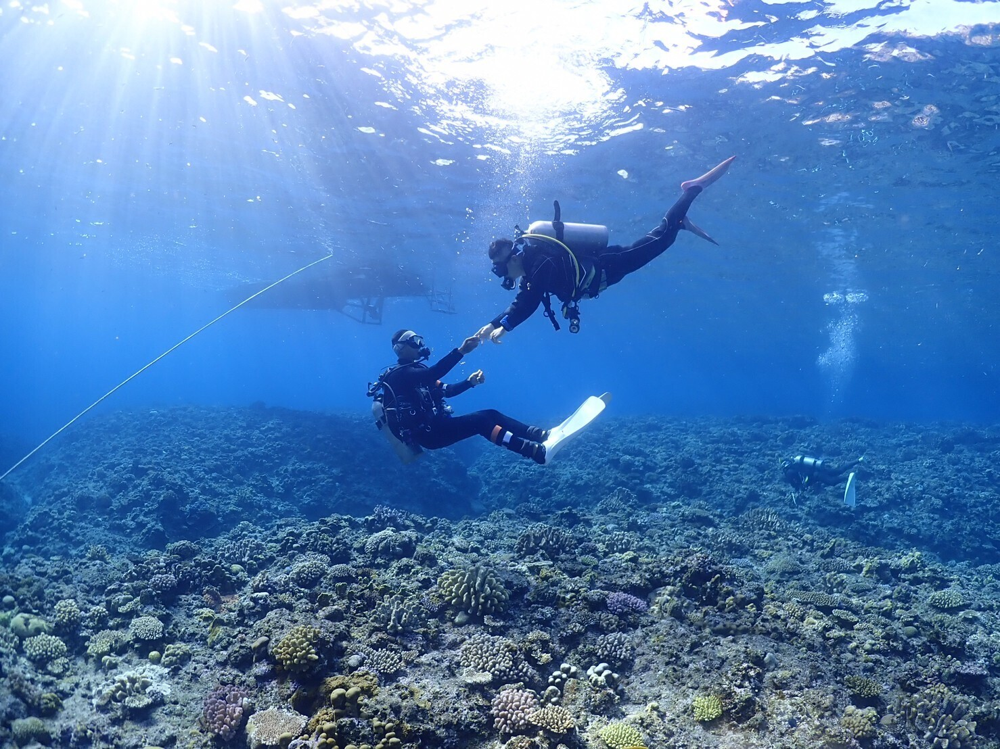
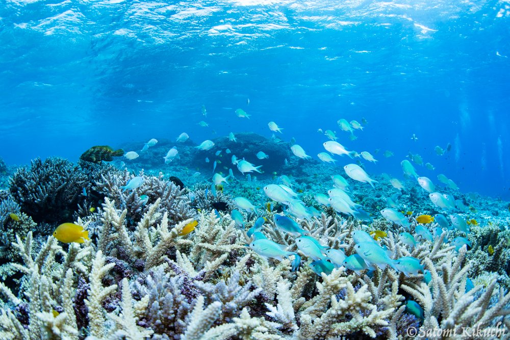

The Kerama Islands are one of Japan's premier dive destinations: famously clear "Kerama Blue" water, healthy coral and a strong chance of meeting green sea turtles. Dozens of dive sites lie a short boat ride from Zamami and Aka. 慶良間諸島は日本屈指のダイビングエリア。透明度の高い「ケラマブルー」、元気なサンゴ、そして高確率で出会えるアオウミガメ。座間味・阿嘉から船ですぐの場所に多数のダイブサイトがあります。

When to diveベストシーズン
- Summer (Jun–Sep): warmest water, best visibility, busiest.夏（6〜9月）：水温が高く透明度も最高。最も賑わう。
- Spring/Autumn: fewer crowds, still excellent.春・秋：人が少なめでコンディションも良好。
- Winter (Jan–Mar): cooler, wetsuit/drysuit — and whale song underwater during the season.冬（1〜3月）：水温低め（要ウェット/ドライ）。シーズン中は水中でクジラの歌が聞こえることも。
What to expectどんなダイビング？
Most diving here is boat-based, with two or three dives per trip. Shops cater to everyone — certified divers, refresher divers, and first-timers via a "try dive" (taiken diving). If you only snorkel, many shops run snorkel trips to the same beautiful reefs. 基本はボートダイビングで、1回の出航で2〜3本。認定ダイバー、ブランクダイバー、初めての方の「体験ダイビング」まで対応するショップが多いです。シュノーケルのみでも、同じ美しいリーフへのシュノーケリングツアーがあります。

How to choose a shopショップの選び方
- Small groups and a guide who speaks your language (ask about English).少人数制で、言葉が通じるガイドか（英語対応の有無を確認）。
- Clear about what's included: gear rental, tanks, insurance, lunch.器材レンタル・タンク・保険・昼食など、料金に含まれるものが明確か。
- Pick-up from your guesthouse and gear-rinse facilities.宿への送迎や器材洗い場があるか。
- A shop that respects the reef — no touching, reef-safe practices.サンゴに触れさせない等、リーフを大切にする方針か。
Dive shops that welcome English speakers英語で潜れるダイブショップ
On a small island, the language your guide speaks matters as much as the dive sites. These Zamami shops can guide international divers in English: 小さな島では、ガイドの言葉が通じるかはポイント選びと同じくらい大切。座間味で英語対応が可能なショップです。
JoyJoy
Toiro
Coral Divers
Piece
Also happy to dive with visitors訪日ダイバーの受け入れ可
No-Y, Cat's and Zamami Sailing also take international divers, communicating in basic English or with a translation app. No-Y・Cat's・Zamami Sailing も、簡単な英語や翻訳アプリで訪日ダイバーを受け入れています。
Language support and availability can change — please confirm directly with the shop when you book. We list these for guidance and are not affiliated with them.英語対応や空き状況は変わることがあります。予約時に各ショップへ直接ご確認ください。掲載は情報提供が目的で、当サイトは各店と提携していません。